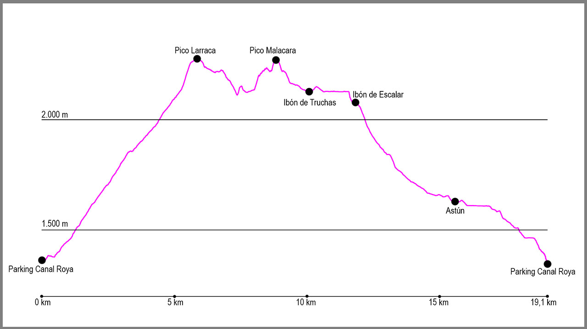

Nuestro punto de partida será el parking de la Canal Roya. Desde este lugar tomaremos la pista que se adentra en el valle durante unos 500 metros aproximadamente. En este momento, nos encontraremos una bifurcación con 3 opciones, donde tomaremos la de nuestra izquierda (el cartel nos marca “La Raca”. Desde este momento el propio camino nos guiará hasta la cima de Larraca.
El camino está muy marcado, con una buena traza, y no presentará problema de pérdida en toda la subida. Cuando llevemos el primer tercio de la subida llegaremos al monte de Larraqueta, donde veremos un antiguo refugio de pastores de lejos. Aquí el camino gira a la derecha para seguir el ascenso. Casi todo el camino es por bosque, pero cuando salimos de él, el sendero continúa por la vertiente sur del pico.
Ya casi en la cima, cambiaremos la orientación a oeste, y es aquí donde la cómo subida cambia para terminar en línea recta nuestro último tramo en dirección a las antenas de comunicaciones que veremos. Justo antes de acabar la subida llegaremos a una pista, que cogeremos en dirección ascendente para finalizar la ascensión.
Desde este punto subiremos hasta una especie de valla que se encuentra a nuestra derecha y desde allí empieza la cresta que nos llevará hasta el pico Malacara. La primera parte es una de las más técnicas. En todo momento tendremos que extremar la precaución e irnos siempre hacia el lado del valle de Astún, ya que la caída es menor. Seguiremos por la cresta hasta todo el rato y salvaremos el pico Aguilas por la izquierda de un edificio blanco. Empezaremos un corto descenso que nos llevará hasta la pista que sube al reenvío de Canal Roya, donde la cogeremos a nuestra derecha para llegar a un gran plano donde se encuentra el final del telesilla de esquí.
Aquí seguiremos de nuevo por la cresta en dirección norte para afrontar otro tramo técnico. No por caída, pero si por la estrechez de la cresta, tendremos que tener sumo cuidado hasta que volvamos a salir a la zona de hierba, momento en el cuál ya solo nos quedará terminar la cresta que nos separa hasta la cima del Malacara. Una vez en el pico, giraremos a la izquierda, en dirección oeste, para afrontar el descenso hasta el collado de Astún.
Justo en este punto, en el que volveremos a entrar a España, empezaremos la bajada, la cual nos llevará por un cómodo y ancho sendero hasta el ibón de Truchas. Pasaremos a su izquierda y seguiremos la pista en dirección noroeste para seguir hasta el siguiente ibón, el de Escalar, momento en el cual acaba la pista. En este momento seguiremos en la misma dirección y tras un pequeño descenso rodearemos a nuestra izquierda el lago.
Justo antes de llegar al sobradero del mismo, tomaremos un camino que sale a nuestra izquierda para afrontar la bajada hasta el punto de inicio. En el primer tramo tendremos que extremar la precaución, pero enseguida llegaremos a un camino bastante cómodo que baja por la margen izquierda del río Aragón. Seguiremos el descenso hasta llegar a otra pista que nos conducirá de nuevo hasta la Estación y posteriormente ya al aparcamiento de la misma, el cuál atravesaremos para llegar a su parte más sur.
En este momento cogeremos la carretera de acceso a Astún en dirección sur y, tras algo más de 2 kilómetros, llegaremos al puerto de Somport. Una vez lleguemos a la carretera principal la cruzaremos de frente, manteniendo la dirección sur, en dirección a Candanchú. Desde este punto empezaremos el descenso hasta el parking de Canal Roya.
Tomaremos en este punto unas escaleras que descienden hacia la parte sur del puerto, para continuar durante cerca de un kilómetro hasta llegar al antiguo hospital de Santa Cristina. Justo en este momento bajaremos hasta la carretera por otras escaleras, y al llegar a ella giraremos a nuestra izquierda para continuar hasta pasar un pequeño puente. Tras pasarlo volveremos a subir un pequeño tramo de escaleras para afrontar otro kilómetro bastante cómodo.
Al final de este tramo volveremos a llegar a la carretera, esta vez la N330, que deberemos atravesar con mucho cuidado y donde comienza un pequeño tramo de subida asfaltado, que nos llevará hasta Piedras Rojas para descender después por una antigua pista forestal. Al final de la misma encontraremos un desvío a nuestra derecha para continuar nuestro camino, esta vez ya en dirección claramente sur, bajando otro tramo de escaleras bastante irregular.
Justo aquí comienzo ya una zona bastante clara de seguir hasta que lleguemos a la pista de Canal Roya. Aquí cogeremos la bifurcación a nuestra derecha y en apenas 50 metros habremos llegado al punto de partida de la ruta.
